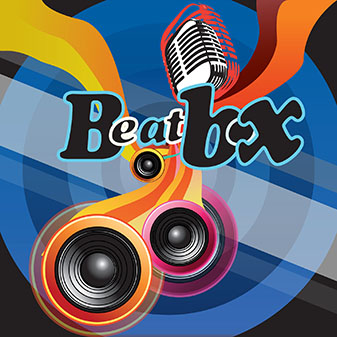
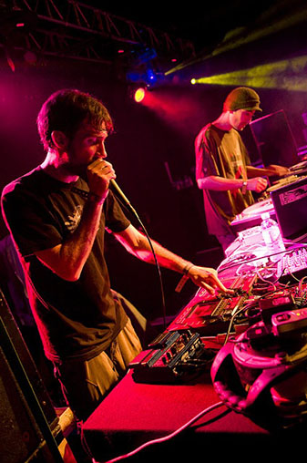

Слово «Битбокс» (англ. beatbox) можно буквально перевести как «коробка удара», «драм-машина». На самом же деле это имитация всевозможных звуковых эффектов ртом. Битбоксер может изобразить звук барабанов, баса, скрэтчей, а так же нередко обладает хорошим вокалом. Битбокс входит в состав пяти элементов хип-хопа; другие четыре элемента — это MC, DJ-инг, граффити и брейк данс.
Драм-машины так же назывались машинами ритма, или коробками удара (это дословный перевод слова beatbox). Первая такая машина — Wurlitzer Sideman, производившаяся в 1959-1964 годах. Внешне она выглядела как большая коробка. Оттуда и пошло шуточное название. Звуки такой драм-машины обычно и имитируют битбоксеры. школа вокала voca-beat школа звукозаписи Музыканты и меломаны уже много лет спорят о том, кого можно считать первым битбоксером. По одной из версий, такое гордое звание можно присудить участнику трио The Fat Boys, которое в 1983 году победило в конкурсе талантов Radio City Music Hall. Участниками коллектива были Mark «Prince Markie Dee» Morales, Damon «Kool Rock-Ski» Wimbley и Darren «Buff the Human Beat Box» Robinson (так же известный как Buff Love и даже просто Buffy). Последний удивил зрителей своим умением изображать различные звуковые эффекты и ритмы хит-хопа без использования инструментов. Его наиболее известный элемент – «динамическое дыхание».
В том же 1983 году на сцену вышел Doug E Fresh (или Doug E Davis) с песней «Pass the Budda» и заявлением, что битбокс в человеческом исполнении изобрёл именно он в 1980 году. Особый звук, который был визитной карточкой Doug E Fresh сейчас называют click roll. Этот битбоксер считается одним из самых известных битбоксеров всех времён, и эту славу ему принесла роль в фильме Beat Street.
Последователем этих двух музыкантов можно считать, например, Biz Markie, который был просто репером, но позже добавил к своим выступлениям битбокс, совмещал читку рэпа и бит, а так же стал известен благодаря развитию элементов inward handclap и harmonic tap.
Из всех музыкальных направлений битбоксу ближе всего хип-хоп. Битбокс зародился в этой сфере, там развивался, и стал менее популярен с падением популярности хип-хопа. Но этим битбокс не ограничился. Его использовали в джазе (там он нередко составлял основу для групп, исполняющих произведения а-капелла, а так же часто использовался известным джазменом Bobby McFerrin), роке (например, его можно заметить в записях группы HouseJacks), и в других стилях. Многое для развития битбокса сделал мастер вокальных эффектов Michael Winslow (он известен по «Полицейской академии», а так же как создатель закадровых звуковых эффектов в фильме «Назад в будущее»).
В 2001 году Eliot создал DVD, который был полностью посвящён только битбоксу. Все композиции были исполнены только голосами, в работе над диском принимали участие Killa Kela, Box Style Bern, Bauchklang. Этот альбом стал одним школа вокала voca-beat школа звукозаписииз первых, которые демонстрировали запись битбокса в несколько дорожек. Та же команда впоследствии выпустила «Beatboxing LP», 2 макси сингла, а так же четыре видеоклипа, которые были показаны по музыкальным телеканалам.
Первое в мире битбокс-агентство Beatboxer Entertainment было открыто в 2002 году. На следующий год A-Plus решило организовать международную конференцию битбоксеров. Целью было не проведение батлов и соревнований, а поиск новых идей и повышение уровня битбокса в мире. Конференция была проведена в Лондоне, и собрала битбоксеров со всего мира. А в 2004 году битбокс был исполнен на открытии Олимпийских игр.Битбокс,как и любое другое музыкальное направление состоит из определенных,шаблоных или базовых звуков.К ним относятся,барабанная бочка,снейеры,хай-хеты и басы.Т.е каждый начинающий битбоксер должен знать как воспроизводить эти звуки,а уже потом совершенствоваться,теперь по порядку как звучат эти звуки
Впринципе на этом я бы и хотел закончить тему битбокса,но,есть одно но,битбокс это универсальное хобби которое может получится у каждого,и для этого лишь нужно много и много практиковаться.